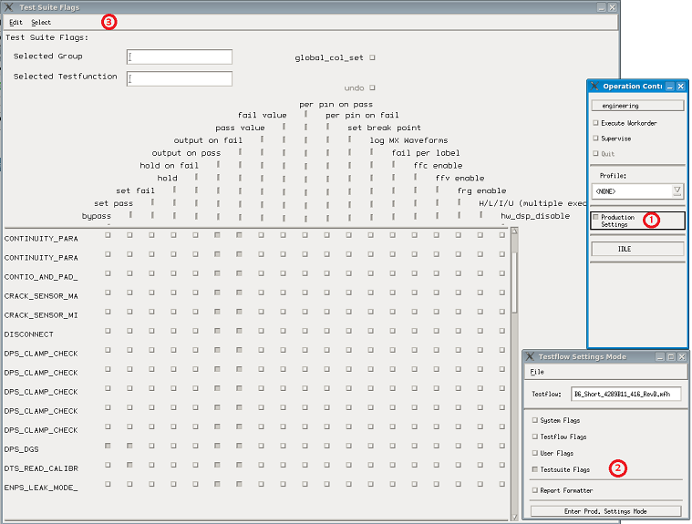
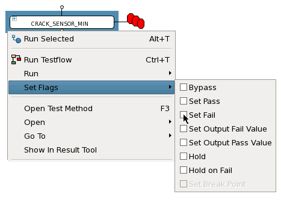

Test suite flags
The test suite flags are used to control the output of the test suite. With them you set which results are acquired during the execution of the test suite, and are included in the report window output and in the files you defined in your application model. The test suite flags are available per test suite.
The flags directly influence how a test suite is executed, for example, whether per pin measurements of values are made.
By default, all test suite flags are inactive.
As the test suite results to be acquired have a significant impact on the execution time, if shorter test execution times are important, only check the necessary flags.
Available test suite flags:- Bypass (bypass)
- Fail per label (fail_per_label)
- Fail value (value_on_fail)
- FFC enable (ffc_enable)
- Hold (hold) - Additional information
- Hold on fail (hold_on_fail) - Additional information
- Log Mixed Signal Waveforms (mx_waves_enable)
- Output on fail (output_on_fail)
- Output on pass (output_on_pass)
- Pass value (value_on_pass)
- Per pin on fail (per_pin_on_fail)
- Per pin on pass (per_pin_on_pass)
- Set fail (set_fail)
- Set pass (set_pass)
- Site Match (site_match)
- Test Level (test_level)
- Test Number (override_test_number)
For a detailed list of the test suite flags, refer to Alphabetical list of flags. Select Test suite in the filter settings of column Area to show only the test suite flags.
The test suite flags are stored in the test_suites section of the
Testflow file.
Test Suite Flags tool
The Test Suite Flags tool is used to visualize and control the state of the test suite flags.
To open the Test Suite Flags tool:
- From the Operation Control window, select Production
Settings.
The Test Flow Settings Mode dialog box opens.
- Select Testsuite Flags.
The Test Suite Flags tool opens, from which you can visualize and control the state of the test suite flags
- Open the shortcut menu for the test suite (right-click the test suite).
- Select Test Flags and select the flag types you want to apply and
deselect any active but non-required flags.
The changes made from the Test Suite Flags tool only apply to the settings of the changed run in memory (working copy of the test flow). No configuration file is changed until the test flow is saved.

To set flags from the Testflow editor:
- Open the shortcut menu for the test suite or a test suite element (right-click the test suite or an element).
- Select Test Flags and select the flag types you want to apply and
deselect any active but non-required flags.
Note Only flags applicable to the selected element are displayed.

The changes made from the Set Flags controls only apply to the settings of the changed run in memory (working copy of the test flow). No configuration file is changed until the test flow is saved.
Additional information: hold and Hold on fail
When testflow execution is held upon a failed test suite which has the Hold on Fail flag set to on, a window prompts asking for confirmation to continue.
- To continue testflow execution, click Continue.
When executing a multisite testflow with some test suites having this flag set to on, a pop-up window is displayed for each and every site to get confirmation from user to continue. That is to say, user needs to make confirmation for each site of a held test suite. To confirm once and ignore the remaining sites, use Skip instead.
- To abort testflow execution, click Abort.
- To skip the confirmation for the remaining sites in the currently held test suite, click Skip.
Functional changes
- Introduced before SmarTest 6.3.2
- SmarTest 7.1.0: Removed FFC scan info enable flag
- SmarTest 7.1.0: Removed Hardware DSP disable flag